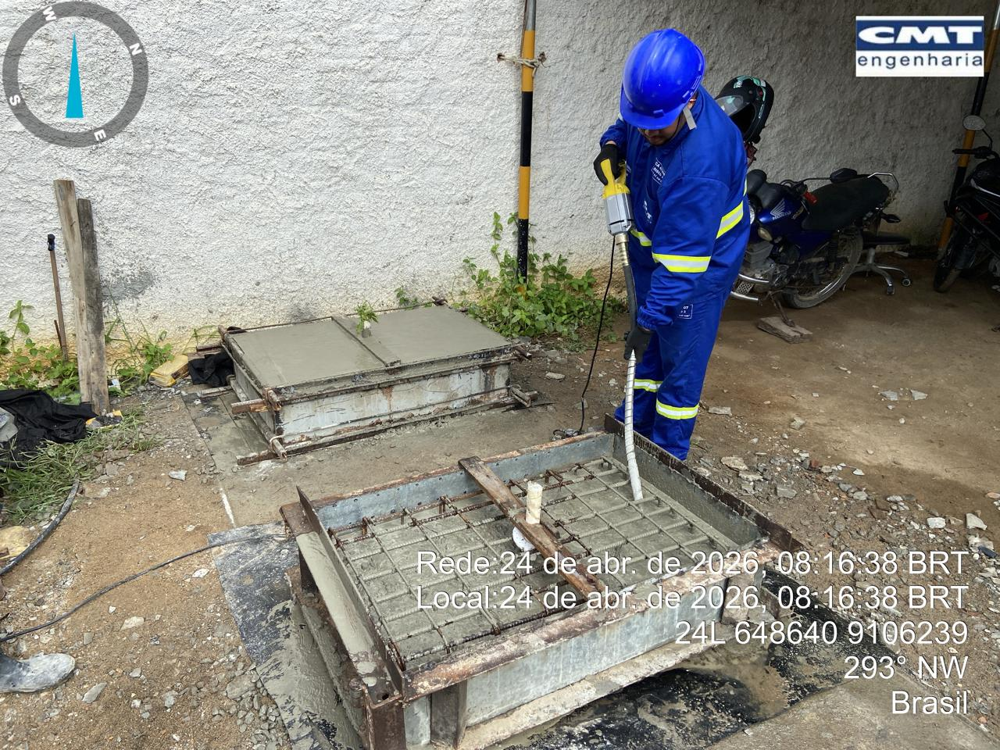
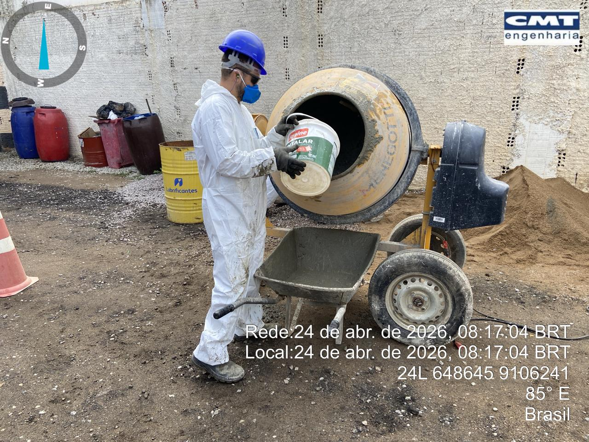
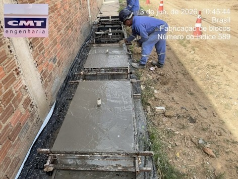
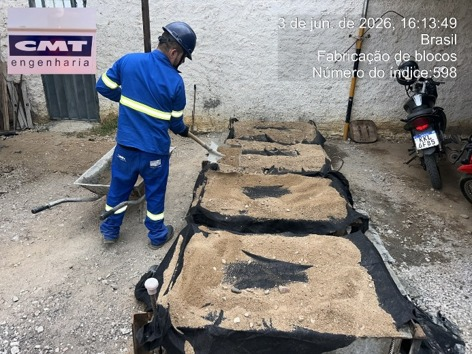

Fabricação de blocos de ancoragem


Processo

adensamento

preparação do concreto

acabamento superficial

início do processo de cura

adensamento

preparação do concreto

acabamento superficial

início do processo de cura